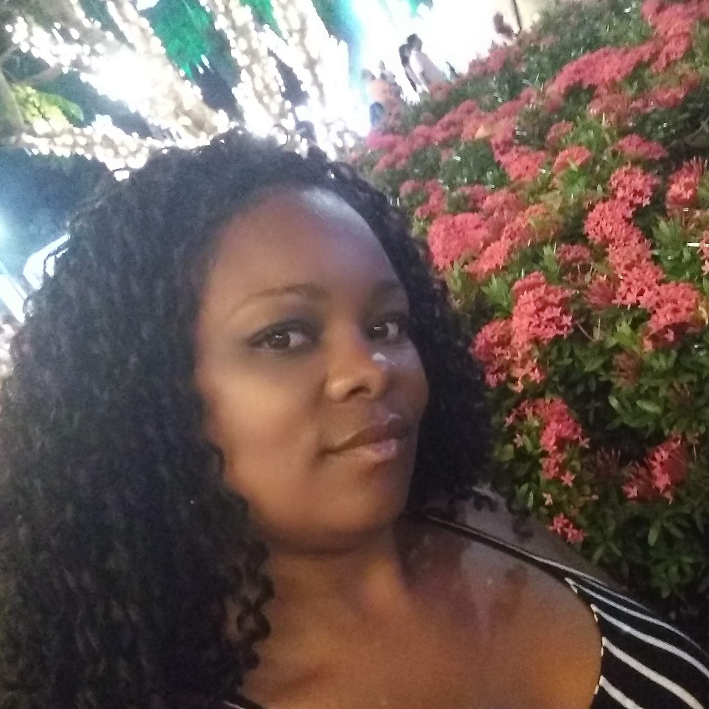

Herança do período colonial,a desigualdade social colabora para a formação de uma sociedade desigual.
começar
Desigualdade Social
Quando o sujeito vive em condições mais favorável que outros, diferença entre as classes.A falta de acesso a educação, cultura,saúde e oportunidades de trabalho, ocorre pela má divisão de renda, em comparação entre os mais ricos e os mais pobres.A tributação de impostos,as questões de gênero e o racismo, são razões que afirmam a permanência do Brasil numa posição negativa. É a diferença econômica que existe entre determinados grupos de pessoas dentro de uma mesma sociedade. Isto se torna um problema para uma região ou país quando as distância entre as rendas são muito grandes dando origem a fortes disparidades.A desigualdade social atinge a sociedade e impede que uma grande parcela da população consiga melhorar sua qualidade de vida. Educação e saúde de qualidade e saneamento básico são alguns dos pontos que mostram como ricos e pobres tem acessos distintos a direitos básicos. A isso, somam-se ainda oportunidades de trabalho e acesso a cultura e lazer.
Isso é herança do nosso período colonial e que funciona como um ciclo que se alimenta com o passar dos anos, sustentado pela má distribuição de renda. Determinados indivíduos se encontram em condições estruturalmente mais vantajosas do que outros, e esta posição os permite acumular ainda mais riquezas em detrimento dos demais.Isso acontece pela má distribuição de renda.
Desigualdade econômica, desigualdade regional, desigualdade racial e desigualdade de gênero, são os tipos de desigualdade socias. Crescimento do desemprego, da violência e dos índices de pobreza, gerados pela falta de oportunidades e acesso à educação, saúde e cultura. Em relação a saúde, a desigualdade social afeta a equidade no acesso à saúde. O sistema de saúde brasileiro não leva em conta plenamente as singularidades e necessidades de cada um, o que gera consequências negativas no campo da saúde, se manifesta como privação relativa ao acesso, controle e poder; é a distribuição da saúde e da doença entre os estratos sociais de maneira hierárquica, gerando inclusive distúrbios psíquicos entre as distintas categorias . Além disso, a desigualdade social pode afetar a qualidade da atenção, a situação de saúde e as condições de vida da população . É possível existir um sistema de saúde que vá ao encontro das necessidades de cada indivíduo, de acordo com o princípio da equidade, respeitando o direito à saúde garantido por lei.
Como surgiu a desigualdade social no Brasil?
Para historiadores, a desigualdade no Brasil é herança do período colonial e se deve a fatores como a infuência ibérica, os padrões e posses de latifúndios e a escravidão. Todos esses fatores colaboraram para a formação de uma sociedade muito desigual nos quesitos social e econômico.Reduzir as desigualdades e um dos ODS das Nações Unidas, Uma série de medidas podem ser adotadas para reduzir o abismo entre ricos e pobres. Os Objetivos de Desenvolvimento Sustentável são um apelo global à ação para acabar com a pobreza, proteger o meio ambiente e o clima e garantir que as pessoas, em todos os lugares, possam gozar de paz e de prosperidade. Estes são os objetivos das Nações Unidas,para cumprir a Agenda 2030 no Brasil.
Alguns dos objetivos apontam para progressivamente alcançar e sustentar o crescimento da renda dos 40% da população mais pobre a uma taxa maior que a média nacional
e promover a inclusão social, econômica e política de todos, independentemente da idade, gênero, deficiência, raça, etnia, origem, religião, condição econômica ou outra
,garantir a igualdade de oportunidades por meio da eliminação de leis, políticas e práticas discriminatórias e da promoção de legislação,e ações adequadas a este respeito.
Saiba mais sobre as ODS
Sobre mim

Patricia Ramos,
otimista , adoro desafios, estou sempre em busca de conhecimento e novas oportunidades.